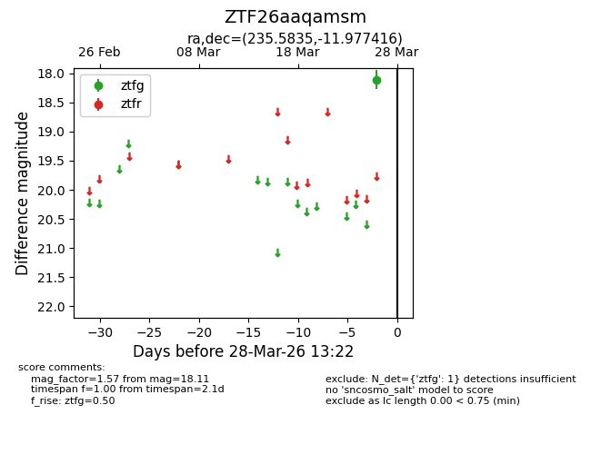
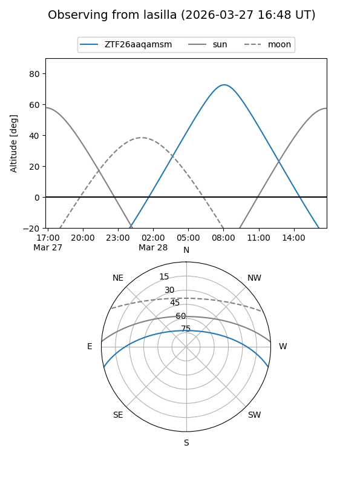
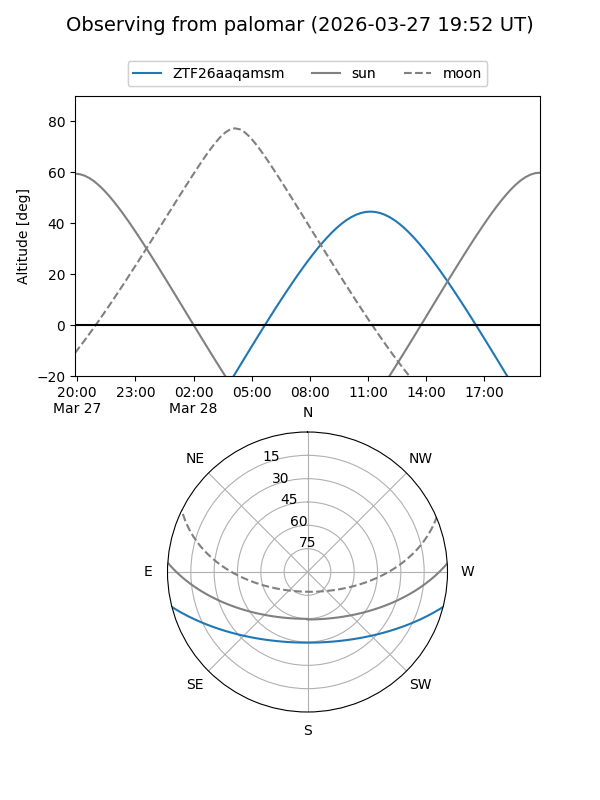

ZTF26aaqamsm
Target ZTF26aaqamsm at 2026-03-28 13:25
Aliases and brokers:
FINK: link
Lasair: link
ALeRCE: link
alt names
ZTF26aaqamsm (ztf,fink_ztf)
Coordinates:
equatorial (ra, dec) = 235.5835,-11.97742
equatorial (HMS+DMS) = 15:42:20.04,-11:58:38.70
galactic (l, b) = (355.2633,+33.02123)
Flags:
Photometry:
last ztfg=18.11
1 ztfg detections
Lightcurve

Visibility


Additional plots